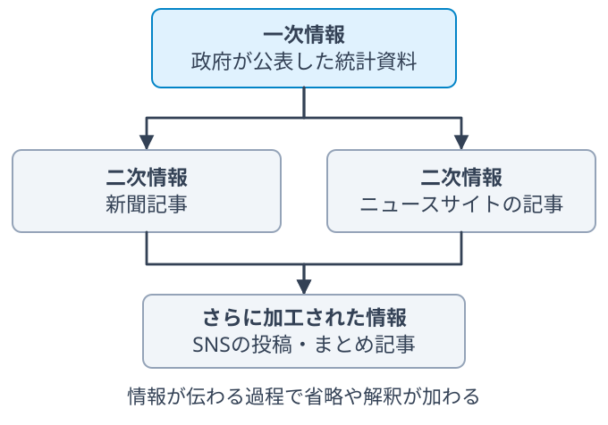
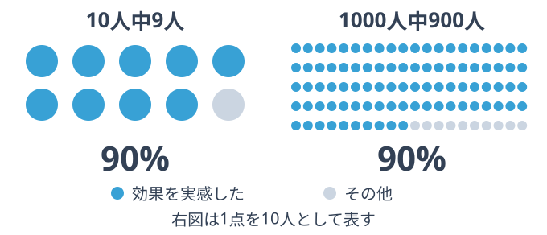
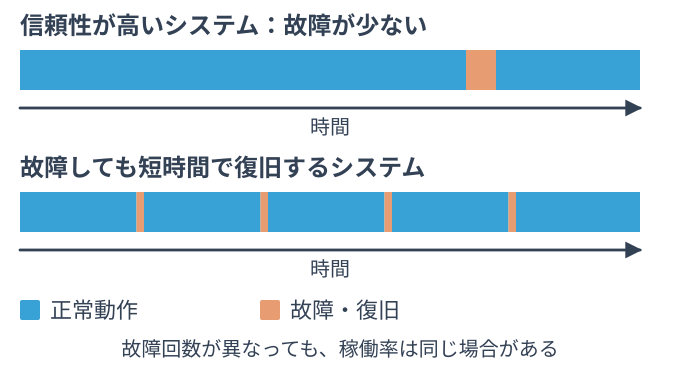
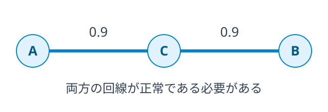
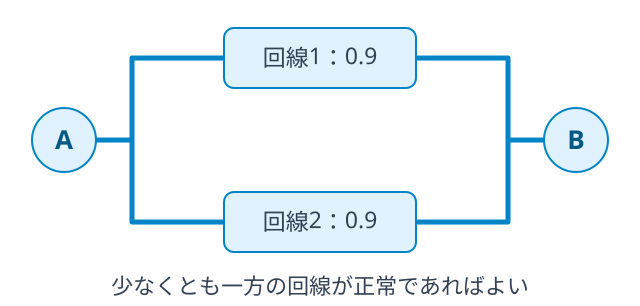

「信頼性」とは
信頼性（reliability）とは、情報や機器、システムなどが、期待される正しさや働きをどの程度維持できるかを表す概念です。
| 対象 | 信頼性の意味 |
|---|
| 情報 | 内容が正確で、十分な根拠に基づいていること |
|---|
| システム | 定められた条件の下で、期待される機能を正常に果たし続けること |
|---|
| 通信 | データの欠落や順序の乱れなどに対処し、正しくデータを届けること |
|---|
どの対象についても、ただ信じるだけではなく、根拠や信頼性を保つ仕組みを確かめることが大切です。
情報の信頼性
インターネット上には、正確な情報だけでなく、誤った情報、古くなった情報、意図的に偏りを持たせた情報もあります。情報を収集・活用するときは、内容をそのまま受け入れず、信頼性を評価します。
情報の信頼性を評価する観点
情報を判断するときは、発信者の知名度だけでなく、次のような点を確認します。
| 確認する事項 | 確認する内容 |
|---|
| 発信者 | 誰が、どのような立場で発信しているか |
|---|
| 発信目的 | 報告、教育、広告、販売、意見表明など、何を目的としているか |
|---|
| 出典 | どのような資料や調査に基づいているか |
|---|
| 根拠 | 主張を裏付ける十分な証拠があるか |
|---|
| 発信時期 | いつ発信され、いつの時点の情報を扱っているか |
|---|
| 調査方法 | どのような対象に対して、どのような方法で調査したか |
|---|
| 引用範囲 | 元の資料の内容や条件が正しく伝えられているか |
|---|
| 客観性 | 特定の立場や利益による偏りがないか |
|---|
| 検証可能性 | 他の人も資料や根拠を確認できるか |
|---|
公的機関や専門家による情報は有力な情報源ですが、所属や知名度だけで内容の正しさが保証されるわけではありません。情報そのものの根拠をたどることが重要です。
一次情報と二次情報
一次情報とは、調査、観察、実験、取材などによって直接得られた情報や、その結果を直接記録・公表した情報です。二次情報とは、一次情報を基に編集、要約、分析、解説などを行った情報です。
例えば、政府が実施した調査の統計資料は一次情報であり、その資料を基に書かれた解説記事は二次情報です。情報が伝わる過程で、元資料の条件が省かれたり、発信者の解釈が加わったりすることがあります。

そのため、情報の信頼性を確かめるときは、引用元をたどり、可能な範囲で一次情報を確認します。ただし、一次情報でも調査方法に問題があったり、測定に誤りがあったりする可能性はあります。
複数の情報源による照合
情報の根拠を調べ、事実に基づいているかを検証することをファクトチェック（事実確認）といいます。情報の信頼性を高めるためには、一つの情報源だけに頼らず、独立した複数の情報源を比較することが有効です。
統計情報の信頼性
統計情報は数値によって客観的な印象を与えますが、数値が示されているだけで正しいとは限りません。例えば「利用者の90％が効果を実感した」という調査結果なら、次のような条件を確かめます。
| 確認する事項 | 確認する理由 |
|---|
| 母集団 | どの集団について結論を得ようとしているかを確かめる |
|---|
| 標本の大きさ | 何人を対象とした調査かを確かめる |
|---|
| 標本の選び方 | 対象者の選び方に偏りがないかを確かめる |
|---|
| 質問文 | 特定の回答へ誘導する質問になっていないかを確認する |
|---|
| 比較対象 | 他の要因や自然な変化による影響と区別できるかを確認する |
|---|
| 調査時期 | いつの状況を表した結果であるかを確認する |
|---|
| 調査主体 | 調査結果に関係する利益や立場がないかを確認する |
|---|
10人中9人も、1,000人中900人も割合は90％ですが、適切な方法で標本を選んでいるなら、一般に標本数が大きいほど偶然によるばらつきは小さくなります。一方で、人数が多くても、対象者の選び方に偏りがあれば、母集団の特徴を正しく表せないことがあります。

統計を評価するときは、割合だけでなく、母集団、標本の大きさと選び方、質問や比較の条件を確認します。
検索エンジンにおける情報の信頼性
検索エンジンの順位は、検索語との関連性、ページの構成や有用性など、さまざまな要因で決まります。検索結果の上位にあることや、広告として表示されていることは、内容の正しさを保証しません。
SNSにおける情報の信頼性
SNSの共有回数、閲覧回数、評価数も注目度を表すものであり、信頼性を直接示すものではありません。誤った情報でも多くの人に拡散されることがあります。
人には、自分の考えに一致する情報を積極的に受け入れ、反する情報を軽視する傾向があります。これを確証バイアスといいます。SNS上の情報を再発信する際には、発信者や一次情報を確認し、独立した信頼できる資料と照合することが重要です。一方で、既存の報道機関が取り上げていないという理由だけで、情報が誤っていると断定することも適切ではありません。十分な根拠が得られない場合には、判断を保留することも必要です。
生成AIと情報の信頼性
生成AIは、情報の収集、文章の要約、調査方針の検討などに活用できます。しかし、出力が常に正しいとは限りません。生成AIが事実に基づかない内容をもっともらしく出力する現象をハルシネーション（hallucination）といいます。
例えば、実在しない文献やURLを示す、資料にない説明をその資料に基づく内容として述べる、古い情報を現在の情報として示す、調査条件を省く、根拠が十分でないのに断定する、といった誤りが起こることがあります。
生成AIを調査やレポートの作成に活用する際には、その出力を調査の手掛かりとして利用し、証拠そのものとは区別する必要があります。
システムの信頼性
情報システムにおける信頼性とは、定められた条件の下で、一定の期間にわたって、要求された機能を正常に果たすことができる性質です。情報システムを構成する機器やソフトウェアには、故障や障害が発生する可能性があります。そのため、システムの設計では、障害の発生を防ぐことに加え、障害が発生した場合にも、その影響を小さくすることが重要となります。
信頼性・可用性・保守性
システムの評価では、信頼性と関係の深い可用性と保守性も考えます。これらを英語の頭文字からRASと総称することがあります。
| 用語 | 意味 |
|---|
| 信頼性（Reliability） | 故障が起こりにくく、正常に動作し続ける性質 |
|---|
| 可用性（Availability） | 必要なときにシステムを利用できる性質 |
|---|
| 保守性（Serviceability） | 障害の修理や復旧を行いやすい性質 |
|---|
信頼性が高いシステムは故障しにくい一方、可用性は故障の発生頻度だけでなく、復旧までの時間にも左右されます。故障が起きても短時間で復旧できれば、故障しにくいシステムと同じ稼働率を保つ場合があります。

MTBF・MTTRと稼働率
システムの信頼性、可用性、保守性を評価する指標として、MTBF、MTTR、稼働率などが用いられます。
| 指標 | 名称 | 意味 |
|---|
| MTBF | 平均故障間隔 | 修復後に稼働を再開してから、次に故障するまでの平均稼働時間 |
|---|
| MTTR | 平均修復時間 | 故障が発生してから、修復して再び稼働するまでの平均時間 |
|---|
| 稼働率 | ― | 全体の時間のうち、システムを利用できる時間の割合 |
|---|
MTBFが大きいほど故障が発生しにくく、MTTRが小さいほど短時間で復旧できると考えられます。故障と修復を繰り返すシステムの長期的な稼働率は、次の式で求められます。
稼働率 ＝ MTBF ÷（MTBF ＋ MTTR）
例えば、MTBFが990時間、MTTRが10時間なら、990 ÷（990 ＋ 10）＝ 0.99 となり、稼働率は99％です。可用性を高めるには、故障を減らしてMTBFを大きくすることと、復旧を早めてMTTRを小さくすることの両方が有効です。
障害に対する設計の考え方
故障や操作ミスへの備えには、異なる考え方があります。
| 用語 | 考え方 | 具体例 |
|---|
| フォールトアボイダンス | 故障や障害の原因となる不具合を発生させない | 品質の高い部品を使い、十分に試験する |
|---|
| フォールトトレランス | 障害が起きても、要求された機能を維持する | 予備サーバへ自動で切り替える |
|---|
| フェイルセーフ | 障害時に安全な状態へ移る | 異常を検知した機械を停止する |
|---|
| フェイルソフト | 機能や性能を制限して、可能な範囲で処理を続ける | 一部のサーバが故障しても残りで処理を続ける |
|---|
| フールプルーフ | 利用者の誤操作による問題を防ぐ | 危険な操作を実行できないように制御する |
|---|
冗長化と稼働率
冗長化とは、必要最低限の構成に予備の機器や回線などを加え、一部に障害が起きてもシステム全体の機能を保てるようにすることです。予備サーバ、複数の通信経路、予備電源などを用意する方法があります。
機器や回線の稼働・故障が互いに独立し、利用可能な経路があれば通信できると仮定すると、接続方法と各部分の稼働率から全体の稼働率を計算できます。
直列構成
必要な機器や回線がすべて正常に動作している場合だけ、システム全体を利用できる構成を直列構成といいます。稼働率がそれぞれa、bの二つの要素を直列につなぐと、全体の稼働率は両方が正常である確率です。
R ＝ a × b
例えば、二つの回線の稼働率がどちらも0.9なら、R＝0.9 × 0.9＝0.81、つまり81％です。一つでも故障すると全体が使えないため、直列に必要な要素が増えるほど、稼働率は低下するか同じ値にとどまります。

並列構成
複数の機器や回線のうち、少なくとも一つが正常なら全体を利用できる構成を並列構成といいます。稼働率がa、bの二つの要素を並列につなぐ場合、全体が使えないのは両方が停止したときです。
R ＝ 1 −（1 − a）（1 − b）
二つの回線がどちらも0.9なら、R＝1−（1−0.9）（1−0.9）＝0.99、つまり99％です。予備の回線を加えると、一方が故障してももう一方で通信を続けられます。

ネットワーク通信の信頼性
ネットワーク通信では、データが小さな単位に分割されて送られます。通信経路の混雑や機器の障害などによって、一部のデータが失われたり、到着順が入れ替わったりすることがあります。
IPとTCPの役割
IP（Internet Protocol）は、IPアドレスを用いてパケットを宛先まで届けるためのプロトコルです。IPはパケットを宛先まで届ける仕組みを提供しますが、すべてのパケットが確実に到着することや、送信した順序どおりに到着することを保証しません。このような配送方式をベストエフォート型といいます。
TCP（Transmission Control Protocol）はトランスポート層のプロトコルで、IPの上で信頼性のあるデータ通信を実現します。